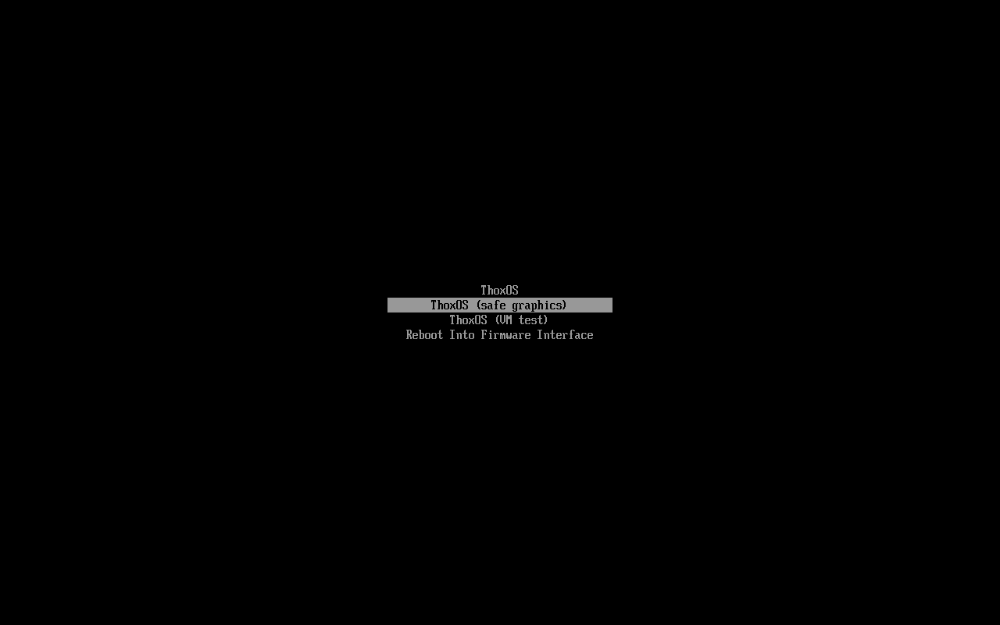
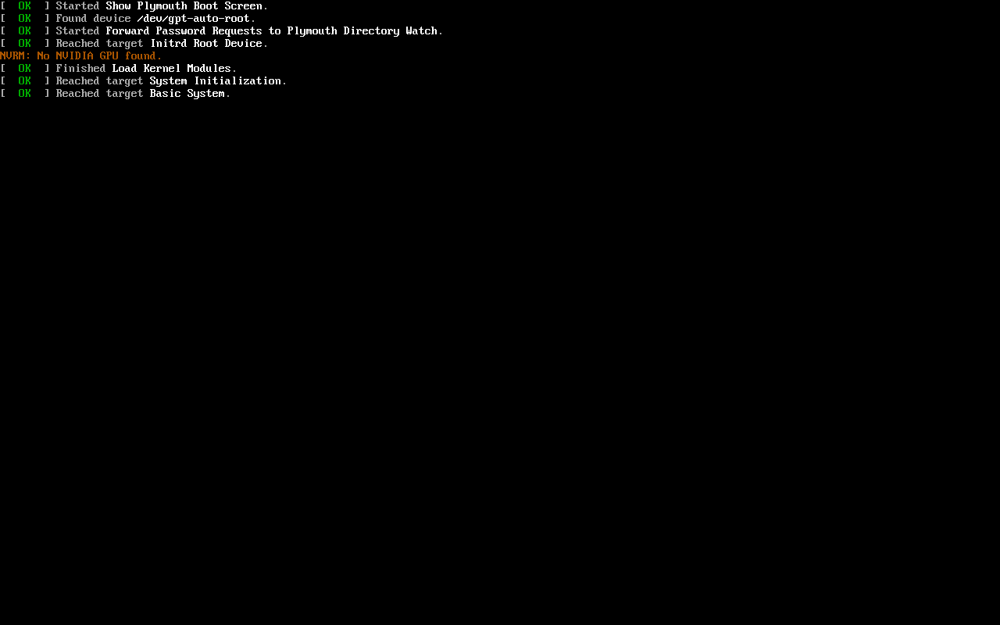
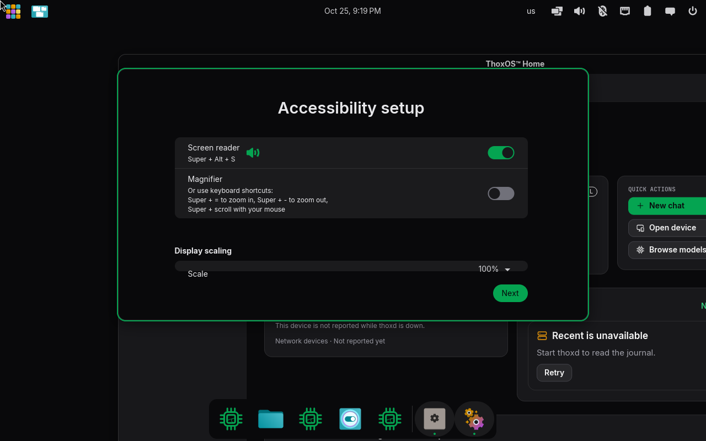
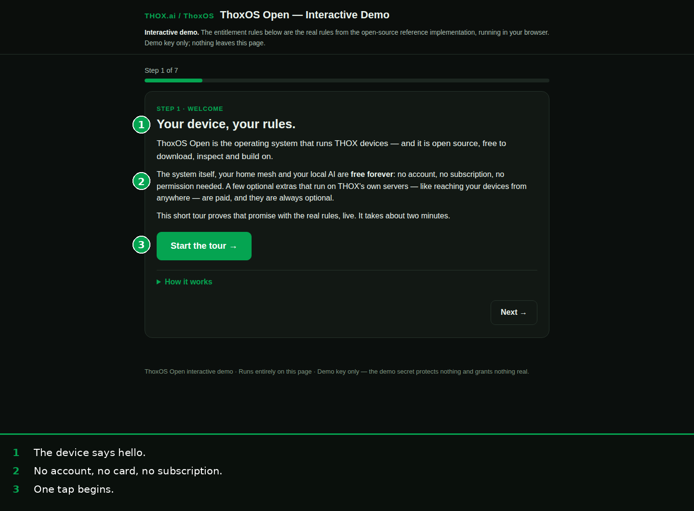
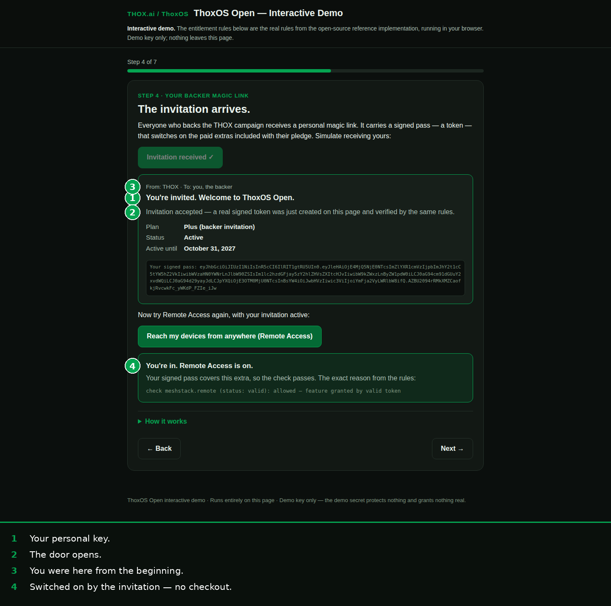
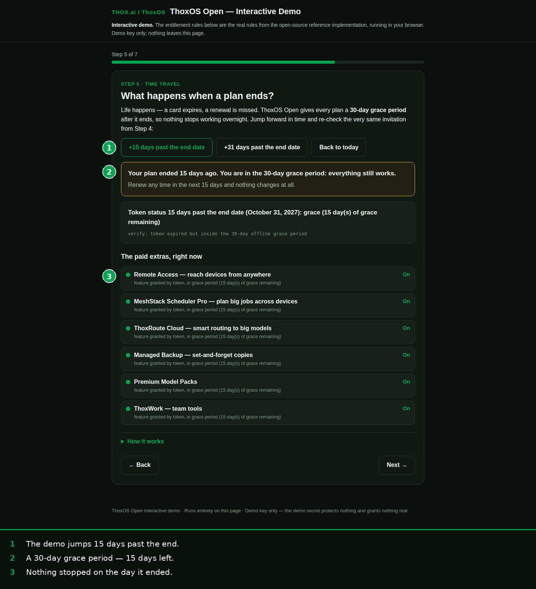
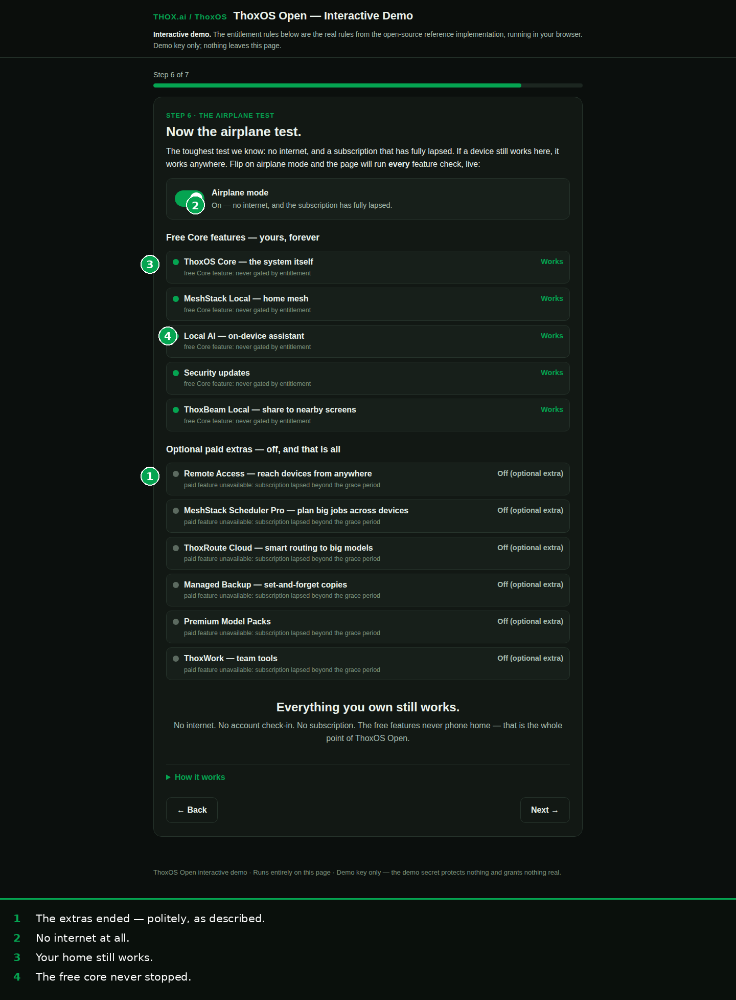

ThoxOS Open — Walkthrough B: First boot and entitlement activation
Part 1 (B-01 to B-04) is the real system booting: the current ThoxOS image (1.0.0-rc.1, x86_64) starting in a virtual machine during the validation run of 2026-10-25 — genuine screens, labelled for the VM they were captured in. Part 2 (B-05 to B-09) is entitlement: ThoxOS is free and needs no account; the optional extras that use THOX's computers are covered by a signed pass, and backers receive one as a personal magic link. The screens are the interactive demo, which runs the real entitlement rules in a browser; their numbers are the published user guide's demo steps 1, 4, 5 and 6.

REAL — boot menu of the release image, VM capture 1 2B-01 — The boot menu
- "ThoxOS" — the normal start. This is the entry a first boot uses.
- "ThoxOS (safe graphics)" — the fallback if the display misbehaves, plus a VM-test entry and a door back into firmware settings.
Plain English: after the firmware menu in Walkthrough A, this is the first ThoxOS screen. Pick the top entry and wait.

REAL — early boot messages, VM capture 1 2B-02 — The system starting
- Green OK lines: boot screen, root device and system initialisation all found and started.
- The one orange line: "No NVIDIA GPU found." Expected inside a virtual machine. On the dual-boot hardware the driver payload is baked into the image.
Plain English: a few seconds of plain text while the system wakes up. Green means go; the orange line is the VM talking about itself, not a fault on real hardware.

REAL — first-run setup dialog, VM capture 1 2 3B-03 — First-run setup: accessibility first
- Before anything else, accessibility: screen reader and magnifier, shortcuts printed next to the switches.
- The screen reader switch — set it now or later; the shortcuts work either way.
- Display scaling is on the same screen; then "Next" carries on to the desktop behind the dialog.
Plain English: the first thing a brand-new ThoxOS asks about is whether you need the screen read aloud or made bigger. Nothing is sold, tracked, or signed up for on this screen.
 REAL — Shell home screen, VM capture
1
2
3
REAL — Shell home screen, VM capture
1
2
3
B-04 — The desktop, first minutes
- The local agent card: THOXY, marked LOCAL — answers on this device unless you choose another route.
- Quick actions: start a chat, open the device page, browse models.
- The honest status line. This frame was captured while the background service (thoxd) was still starting — about two and a half minutes on this build — and the shell says "not reachable" instead of pretending.
Plain English: this is home. The icons down the left (Home, Chat, Agents, Projects, Apps, Devices, Vault) are the whole system; Walkthrough D visits each room.

SIMULATION — interactive demo, guide step 1 (callouts baked into the figure)B-05 — Demo step 1: the welcome
The demo opens on the promise the rules have to keep: the device is yours, the free core is free forever, and no account, card, or subscription is asked for. Plain English: this part of the walkthrough runs in a web page, on purpose — you can watch the entitlement rules behave before you ever install anything.

SIMULATION — interactive demo, guide step 4 (callouts baked into the figure)B-06 — Demo step 4: the invitation arrives (activation)
- Your personal key: the backer magic link, from THOX, to you.
- The door opens: accepting it creates and verifies a real signed pass on the spot — plan, status and expiry printed on it.
- You were here from the beginning: the invitation is the backer perk, carried by the pass itself.
- Switched on by the invitation — no checkout: Remote Access, refused politely in step 3, is now on, with the rule's own reason shown.
Plain English: activation is not a licence key typed into a box. A signed pass arrives, the system checks the signature, and the extras it covers turn on — with the workings shown, not hidden.

SIMULATION — interactive demo, guide step 5 (callouts baked into the figure)B-07 — Demo step 5: fifteen days past the end (grace)
The demo jumps the clock 15 days past the end of the included period. The pass is in its 30-day grace period with 15 days left, and Remote Access is still on. Plain English: if a subscription ever lapses, the extras do not cut out mid-sentence. There is a month of grace, and the screen tells you how much is left.

SIMULATION — interactive demo, guide step 6 (callouts baked into the figure)B-08 — Demo step 6: lapsed, and the aeroplane test
Past day 30 the extras switch off — politely, as described. Then the demo cuts the network entirely, and the free core carries on: the home mesh still runs and local chat still answers. Plain English: the whole ThoxOS Open bargain in one screen — what you own outright never phones home, never expires, and never needs permission.
B-09 — The same rules, as program output
REAL — verbatim output of the entitlement reference implementation
Full text: b-09-entitlement-terminal-output.txt. The lines that matter:
check meshstack.remote: allowed (feature granted by valid token) check core-os: allowed (free Core feature: never gated by entitlement) status: grace (grace days remaining: 15) ← at expiry +15 days check meshstack.remote: denied ← at expiry +31 days check local-ai: allowed (free Core feature: never gated by entitlement) check security-updates: allowed (free Core feature: never gated by entitlement)
Plain English: the rule is mechanical, published, and testable — paid features follow the pass; the free core never does. Anyone can run this file and watch it happen.